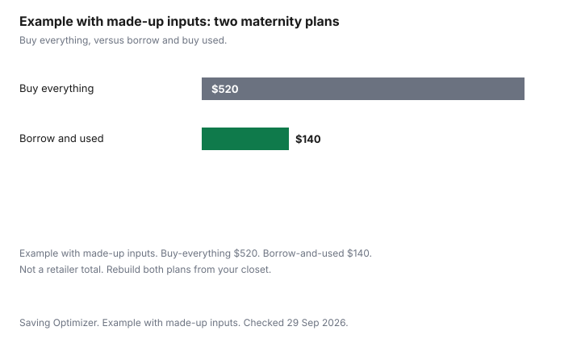

Clothing · Canada
Maternity Clothes on a Budget in Canada: Borrowing, Buying Used and What to Skip
Maternity clothes are a short season in a long closet. The spending mistake is a full new wardrobe in month three, then another full wardrobe for feeding, then a closet you cannot resell because the tags are still on pieces you wore twice. A smaller kit uses what you already own, what you can borrow, and a few pieces you buy used or new because nothing you own will close. This is a clothing list. It is not prenatal care, and it is not a recommendation about how to feed a baby. Health questions belong with your clinician. Borrowing is Buy Nothing. Used retail is Value Village. Selling afterwards is selling clothes online. The monthly line that has to absorb a short spike is a household clothing budget, and the habit of setting cash aside for a known bill is sinking funds.
Key takeaways
- Start with the clothes that already fit: stretch knits, drawstring waists, cardigans, and shirts you can leave untucked. Buy when those stop closing, not before.
- A borrow from a friend or a Buy Nothing group covers a season you will not repeat. A used piece covers the same season if the elastic and the seams are sound.
- What is worth buying new is the piece you will wear constantly and cannot borrow in your size: often a pair of bottoms, and later a few tops that open if you want that overlap.
- Afterward, list the special pieces while the season still matches. Ordinary clothes go back into the regular closet. Poshmark's fee, if you use it, is on the selling guide.
- Example with made-up inputs: a buy-everything plan at $520 versus a borrow-and-used plan at $140. Those totals are not a store.
What you really need by trimester
Think in three clothing stages, not in a medical calendar. Early on, most people can wear their own clothes.
Later, a short list of bottoms and longer tops does the work. After the birth, the useful overlap is a few tops that open or lift if you want them, plus the ordinary clothes that fit again as they fit. Nothing in that sequence is a rule about your body. If a garment hurts, stop wearing it. This page will not tell you which week to switch.
Early: leave a waist unbuttoned under a longer shirt you already own. A dress with a stretch panel you already own, or a simple shift, can outlast the first tailored pair you are tempted to order. Do not buy a coat yet if the coat you own still closes or you can leave it open over a scarf. Later: two pairs of bottoms you can walk in, enough tops to get through a wash cycle, one layer for the weather you actually have, and shoes that fit the feet you have now. If your usual shoes stop fitting, replace the pair that hurts. Do not buy a row of "just in case" sizes. Postpartum: the bottoms that still fit, a few tops with access if you want that, and the rest of your old closet as it becomes wearable again. A second complete wardrobe for the first month is the plan the chart marks as the expensive one.
| Stage | From your closet | Borrow or buy used | Consider buying new |
|---|---|---|---|
| Early pregnancy | Stretch dresses, cardigans, untucked shirts, drawstring waists, the coat you own. | Only if your own clothes already will not close. A friend's panel pant for a month is enough to test. | Skip a full kit. Nothing in this row has to be new if the closet still works. |
| Later pregnancy | Any piece that still covers and stays up. Leggings you already own under a longer top. | Panel pants, a larger soft dress, a maternity coat if your coat will not close and a friend has one. | The one bottom you will wear most days, in a size you have tried on, if nobody you know has it. |
| Postpartum | The soft clothes from later pregnancy, then your regular clothes as they fit. | Extra tops if a friend is finished with them. Return borrows on a date you both name. | A small number of tops that open or lift, only if you want that overlap and cannot borrow them. |
Regular sizes that work
A larger regular size you already own is a maternity garment if it covers you and you can move in it. Look for knits rather than a tailored waist, a cardigan instead of a jacket that will not button, and a dress that does not depend on a zip you cannot do up.
Your partner's or a housemate's oversized shirt is a layer, not a costume you must buy. The test is ordinary: can you sit, walk, and wash it. If yes, it is in the kit. If the shoulders are so wide the neckline falls off, it is not a solution. It is a loan that does not fit.
Do not clear the regular closet into a donation bag in month four. You will want those clothes back. Move the pieces that will not close into a bin you can reach, with a note of the season, so you are not buying a duplicate of a dress you already own. The household budget guide is where that bin meets the rest of the year's clothing line. A short spike is not a new monthly average unless you choose to make it one.
Used and borrowed options
Borrow first from people who wore a similar size and who want the clothes back or are finished with them. Name the return date when you pick them up, because a maternity loan that becomes a permanent transfer causes the fight, not the saving. Buy Nothing is the gift version of that loan: you give the pieces on when you are done, and you do not pay. A local swap works the same way for an afternoon.
Used retail is the path when your circle does not have your size. Value Village and other thrift shops turn over soft pants and dresses quickly and maternity sections slowly. Check the elastic. If it is brittle, the piece will not last the season you need. Check seams at the panel. A designer consignment piece is usually the wrong search. You will wear these clothes hard for a few months. The designer consignment guide is for clothes you expect to resell at a split, not for a panel pant. Kids' consignment shops sell children's clothes, not this closet, except for baby clothes later.
Nursing-friendly overlap
If you want tops that open or lift, you need a few, not a drawer. Two or three that work with the bottoms you already kept will cover a wash cycle.
A regular button-front shirt you already own can be that top. A dress you have to take off entirely is the piece that feels inconvenient, and you can stop wearing it without buying a replacement category. This page does not say you should feed a baby a certain way, and it does not name a nursing brand. If you do not want specialized tops, do not buy them. The overlap is optional clothing, not a kit you owe anyone.
What is worth buying new is narrow. Underwear and anything that sits next to skin you cannot verify as clean. A bottom you will wear most days, in a fit you have tried, when a borrow is not available. Shoes that no longer fit, bought for the foot you have, not a row of sizes. Everything else waits until the closet and the borrow list have both failed. A "complete maternity wardrobe" checklist from a shop is a catalogue. It is not this list.
Resale afterwards
Ordinary clothes go back into your rotation. Special pieces have a short second life, so list them while the weather still matches and while the elastic still has snap.
Wash them according to the care label. Photograph the panel and any pill. Price from the fee outward if you use Poshmark: the Get Started guide charges C$3.95 under C$20 and 20 percent of the listing price at C$20 or more. The selling guide has that comparison. A local gift through Buy Nothing costs no fee and clears the bin. Baby clothes, if you have them later, are the kids' consignment path, not this one.
Example with made-up inputs. A buy-everything plan, counted as several new bottoms, new tops, a coat, and new shoes, totals $520. A borrow-and-used plan, counted as borrowed bottoms, one used dress, and one new pair of bottoms, totals $140. The pieces in that sentence are a sketch, and both totals are made up. They are not a retailer and not a budget you should adopt. The chart shows the gap the sketch produces. Rebuild both columns with what you already own before you put a number in the sinking fund.
| Plan | Made-up contents | Made-up total |
|---|---|---|
| Buy everything | New bottoms, new tops, a coat, and shoes, all purchased. | $520 |
| Borrow and used | Borrowed bottoms at $0, one used dress, one new pair of bottoms. | $140 |

Sources & date stamps
- No maternity retailer price list is cited. The two plan totals are made-up inputs.
- Poshmark Canada's fee formula is cited on the selling-clothes guide, which points at the Get Started page. Confirm the fee on poshmark.ca before you list.
- Buy Nothing and thrift rules are on the linked guides. This page does not restate a medical guideline. It is a clothing list.
Frequently asked questions
How much maternity clothing do I actually need?
Less than a shop catalogue. Early on, your own clothes. Later, a short list of bottoms and tops that cover. Afterward, a few tops that open only if you want them. Example with made-up inputs: a buy-everything sketch at $520 versus a borrow-and-used sketch at $140. Those totals are not a store. This is a clothing list, not medical advice.
Can I wear regular clothes while pregnant?
Yes, while they cover you and you can move in them. Stretch knits, drawstring waists, cardigans, and shirts you can leave untucked are the first kit. A larger regular size you already own counts. Stop when a piece hurts or will not stay on. Leave the regular closet in place. You will want those clothes again.
Where can I find used maternity clothes?
Friends first, with a date to bring the clothes back. Buy Nothing groups if you want a gift rather than a loan. Thrift shops for soft pants and dresses, if the elastic is still sound. Designer consignment is usually the wrong search for clothes you will wear hard for a few months. Kids' consignment is for children's clothes.
What is worth buying new?
Underwear, and anything that sits on skin you cannot verify as clean. One bottom you will wear most days, tried on, if you cannot borrow it. Shoes that no longer fit the feet you have now. A few tops that open, only if you want that overlap and cannot borrow it. Everything else waits.
What happens to maternity clothes after?
Regular clothes go back into rotation. Special pieces should be listed or given away while the elastic still works and the season still matches. Poshmark Canada's published fee applies if you sell there. A Buy Nothing gift clears a bin with no fee. Baby clothes, later, are a different guide from this one.
Researched and drafted with AI assistance and fact-checked against official Canadian sources. How we create content.